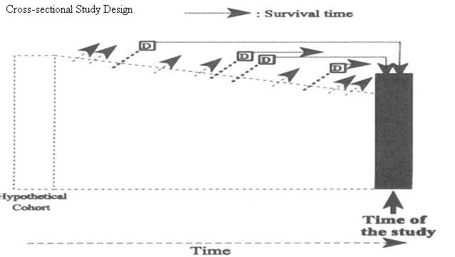
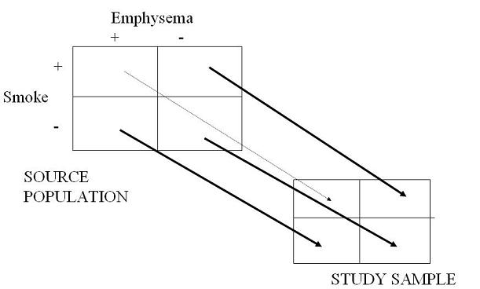

Selection Bias - Cross-Sectional Study
Lead Author(s): Jeff Martin, MD
Cross-sectional Study Design
As seen in the diagram below, there is an underlying cohort that is being sampled in a cross-sectional study, but only at one point in time.
- If there were disease outcomes that occurred but some of these persons died they would not be represented in the sample.
- It is only those who lived long enough who would get sampled.
Schematic of Cross-Sectional Study Design

Reasons for Biased Sampling in Cross-sectional Studies
There is a lot going on behind the scenes in cross-sectional studies, most of which are caused by the sampling (or inclusion) of prevalent as opposed to incident cases.
Whenever you perform a cross-sectional study, finding a diseased person in your sample really depends upon 2 things:
a) that the disease occurred in the first place; and
b) the diseased person survived long enough to be sampled in your study.
Survival Can Cause Bias
Any factor that you find to be associated with a prevalent case of disease may cause disease development in the first place or be a factor related to survival after disease occurs OR both.
So, assuming your goal is to find factors associated with disease development (i.e., etiologic research) the prevalence ratio you get in a cross-sectional study will be biased in relation to the true incidence ratio any time that the exposure under study is also associated with survival with disease.
Selection Bias in Cross-Sectional Study: Smoking and Emphysema
Smoking is a cause of emphysema but persons with emphysema who also smoke have shorter survival than persons who don't smoke.
- Hence, in any cross sectional study of persons with emphysema those who smoke more are apt to be less represented because of the survival disadvantage of smoking.
The result of this is the prevalence ratio looking at smokers vs non smokers is going to be an underestimate of the incidence ratio, presumably the more interesting measure of association.
Here is what this looks like schematically. You perform a cross sectional study and smokers who also have emphysema are going to be relatively undersampled because of their survival disadvantage.
- The result is an underestimate of the association between smoking and emphysema.
Schematic of Biased Sampling of Individuals with Emphysema

See Also
Other causes of selection bias